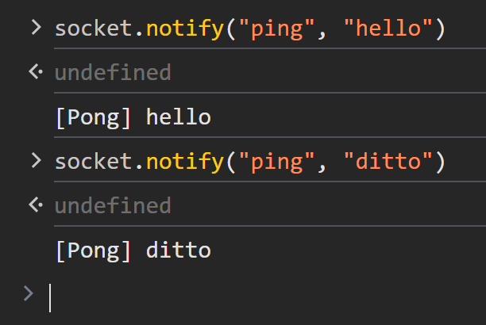

Notify events
The Notify events enables bi-directional, event-based communication between clients and servers. This allows both sides to send and receive notifications without waiting for a response.
Server-Side Example (Rust)
Let's walk through a basic "Ping-Pong" example, where the client sends a
"ping" notification to the server, and the server responds with a "pong"
echoing back the same data received.
use axum_socket_io::{Procedure, SocketIo};
use std::net::SocketAddr;
pub async fn handle_socket(mut socket: SocketIo, addr: SocketAddr) {
println!("A user connected: {addr:#?}");
while let Ok(ev) = socket.recv().await {
match ev {
Procedure::Notify(req) => match req.method() {
"ping" => socket.notify("pong", req.data()).await.unwrap(),
_ => {}
}
Procedure::Call(req, res, _) => { /* ... */ }
}
}
println!("user disconnected: {addr:#?}");
}Client-Side Example (JavaScript)
The socket.on(<eventName>) method returns an asynchronous iterator, allowing
you to use a for await loop to continuously listen for events as they arrive:
<script type="module">
import { SocketIo } from "https://esm.sh/client-socket-io@0.1.0";
const decodeText = data => new TextDecoder().decode(data);
window.socket = new SocketIo("ws://127.0.0.1:3000/socket");
await socket.connect();
async function onPong() {
for await (const msg of socket.on("pong")) {
console.log("[Pong]", decodeText(msg));
}
}
[onPong].forEach(fn => fn().catch(console.error));
</script>
Sending a Notification

socket.notify(<eventName>, <data>) sends a notification message to the server
without waiting for a response.
-
<eventName>: string: The name of the event you want to send. This string identifies the type of notification (e.g.,"ping","update", etc.), -
<data>: Uint8Array | string: The data associated with the event. It can either be:- A array of byte (
Uint8Array). - A
string, which will be encoded to UTF-8 bytes before being transmitted.
- A array of byte (